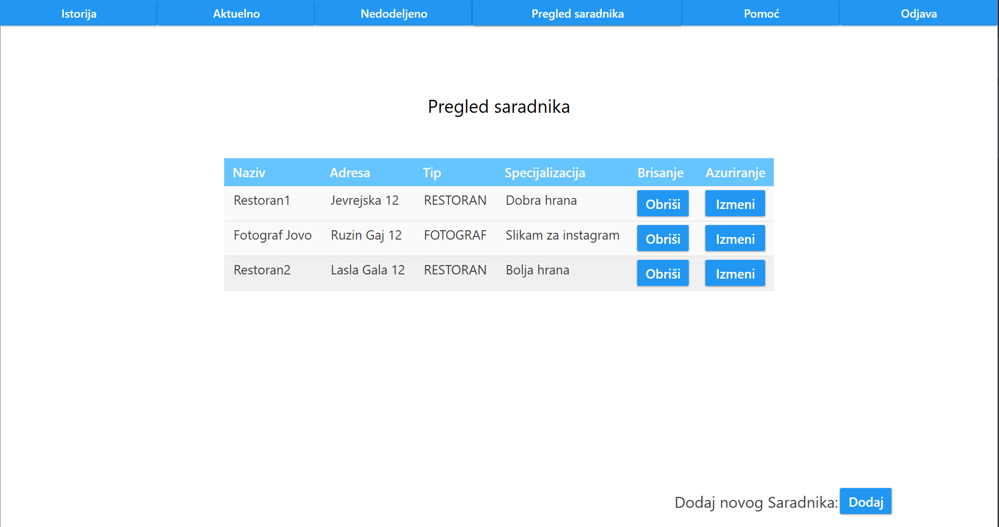
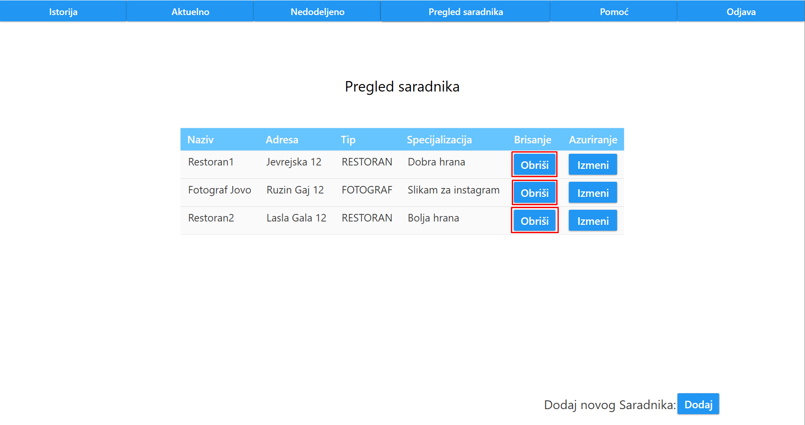
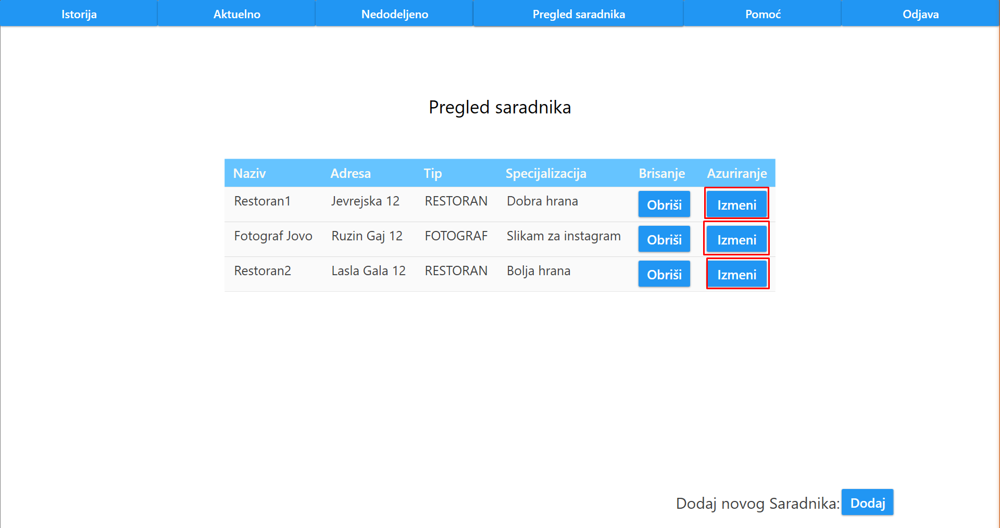
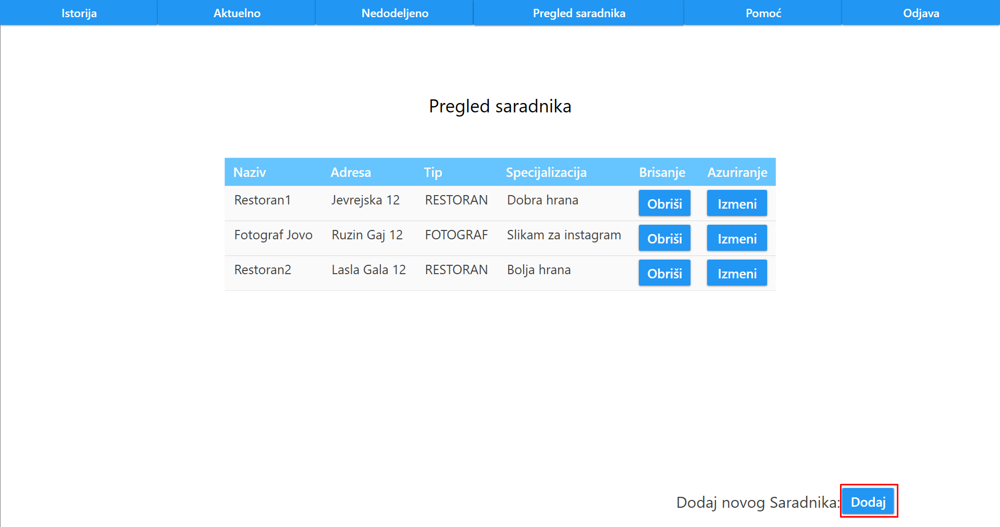

Nakon klika na dugme "Pregled saradnika", korisniku se prikazuju svi njegovi saradnici.
Prikaz saradnika je odrađen tabelarno, gde je za svakog saradnika ispisan naziv, adresa, tip saradnika, specijalizacija, kao i dugmad "Obriši" i "Izmeni".
Klikom na dugme "Obriši", organizator može da obriše datog saradnika.
Klikom na dugme "Izmeni", organizator moze da ažurira datog saradnika.
U donjem desnom ćošku, organizatoru je omogućeno dodavanje novog saradnika, klikom na dugme "Dodaj"
